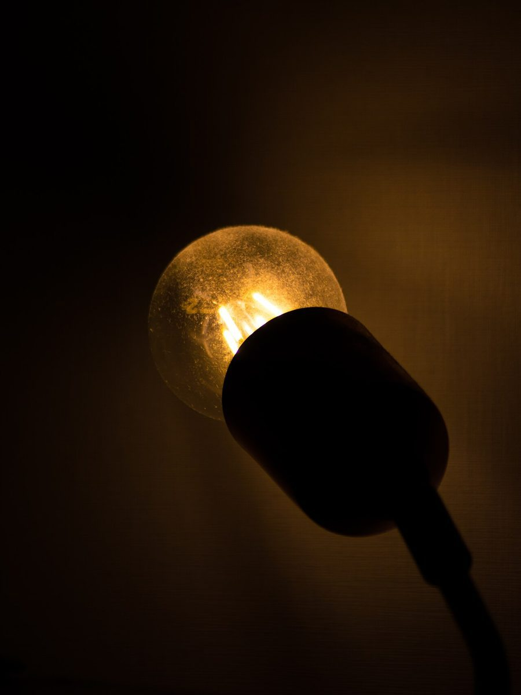
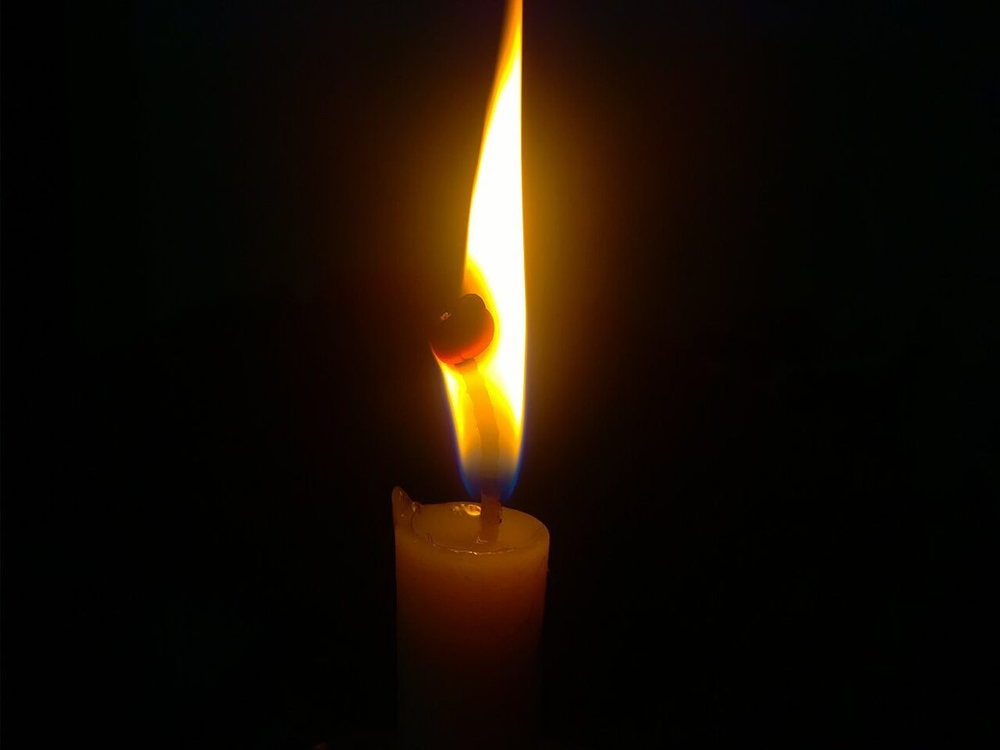
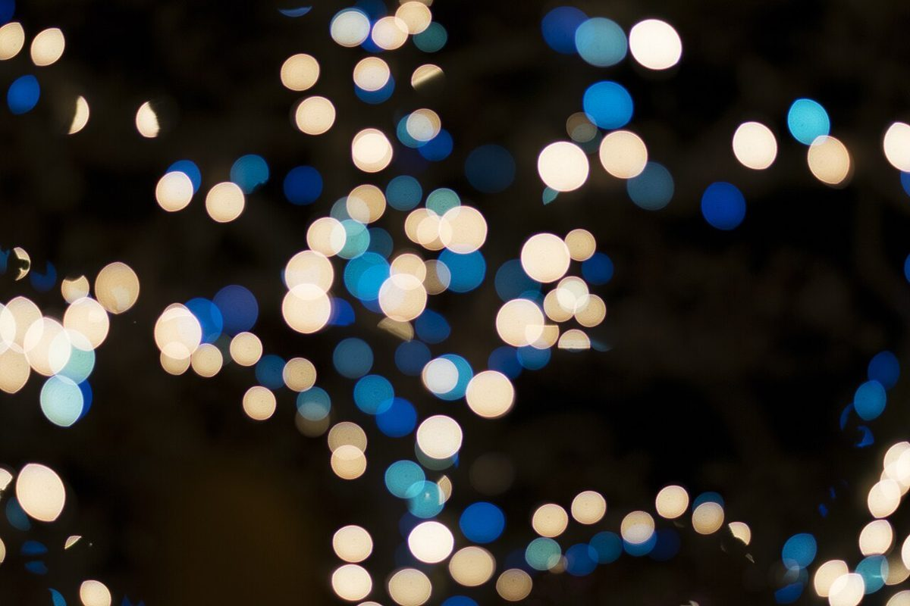

Fl単閃光
光の符号 Fl ・ 10秒周期の見立て
Chelsea Coffee
コーヒーのお店。いまは公式の情報がそろうまでの準備期間です。灯台の「光り方の符号」になぞらえて、五つのページに並べました。

01符号の索引
灯台は、光る長さと暗い長さの組み合わせで自分を知らせます。この試作では、その組み合わせをページの目印にしています。
02いま分かっていること
確認できているのは所在地とInstagramだけです。ほかは、お店からお聞きしたうえで掲載します。
- 所在地
- 〒820-0047
福岡県飯塚市八木山259 - @chelsea.coffee
- 電話
- なし
- 営業時間
- 準備中
- 定休日
- 準備中
- メニュー・価格
- 準備中
- 予約・駐車場
- 準備中


03つづきは、Instagramで
営業時間やメニューなどの案内は準備中です。最新の様子は、公式Instagramの更新をご覧ください。
